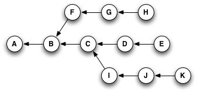

<!DOCTYPE html>
<html xmlns="http://www.w3.org/1999/xhtml" lang="" xml:lang="">
    <head>
        <meta charset="utf-8" />
        <meta name="generator" content="markdown-it" />
        <meta name="viewport" content="width=device-width, initial-scale=1.0, user-scalable=yes" />
        <meta name="author" content="runner" />
        <meta name="dcterms.date" content="2025-04-08 13:38:18.862" />
        <title>git_cherry_pick</title>
        <style type="text/css">
            code {
                white-space: pre-wrap;
            }
            span.smallcaps {
                font-variant: small-caps;
            }
            span.underline {
                text-decoration: underline;
            }
            div.column {
                display: inline-block;
                vertical-align: top;
                width: 50%;
            }
        </style>
        <style type="text/css">
            a.sourceLine {
                display: inline-block;
                line-height: 1.25;
            }
            a.sourceLine {
                pointer-events: none;
                color: inherit;
                text-decoration: inherit;
            }
            a.sourceLine:empty {
                height: 1.2em;
            }
            .sourceCode {
                overflow: visible;
            }
            code.sourceCode {
                white-space: pre;
                position: relative;
            }
            div.sourceCode {
                margin: 1em 0;
            }
            pre.sourceCode {
                margin: 0;
            }
            @media screen {
                div.sourceCode {
                    overflow: auto;
                }
            }
            @media print {
                code.sourceCode {
                    white-space: pre-wrap;
                }
                a.sourceLine {
                    text-indent: -1em;
                    padding-left: 1em;
                }
            }
            pre.numberSource a.sourceLine {
                position: relative;
                left: -4em;
            }
            pre.numberSource a.sourceLine::before {
                content: attr(title);
                position: relative;
                left: -1em;
                text-align: right;
                vertical-align: baseline;
                border: none;
                pointer-events: all;
                display: inline-block;
                -webkit-touch-callout: none;
                -webkit-user-select: none;
                -khtml-user-select: none;
                -moz-user-select: none;
                -ms-user-select: none;
                user-select: none;
                padding: 0 4px;
                width: 4em;
                background-color: #ffffff;
                color: #a0a0a0;
            }
            pre.numberSource {
                margin-left: 3em;
                border-left: 1px solid #a0a0a0;
                padding-left: 4px;
            }
            div.sourceCode {
                color: #1f1c1b;
                background-color: #ffffff;
            }
            @media screen {
                a.sourceLine::before {
                    text-decoration: underline;
                }
            }
            code span {
                color: #1f1c1b;
            } /* Normal */
            code span.al {
                color: #bf0303;
                background-color: #f7e6e6;
                font-weight: bold;
            } /* Alert */
            code span.an {
                color: #ca60ca;
            } /* Annotation */
            code span.at {
                color: #0057ae;
            } /* Attribute */
            code span.bn {
                color: #b08000;
            } /* BaseN */
            code span.bu {
                color: #644a9b;
                font-weight: bold;
            } /* BuiltIn */
            code span.cf {
                color: #1f1c1b;
                font-weight: bold;
            } /* ControlFlow */
            code span.ch {
                color: #924c9d;
            } /* Char */
            code span.cn {
                color: #aa5500;
            } /* Constant */
            code span.co {
                color: #898887;
            } /* Comment */
            code span.cv {
                color: #0095ff;
            } /* CommentVar */
            code span.do {
                color: #607880;
            } /* Documentation */
            code span.dt {
                color: #0057ae;
            } /* DataType */
            code span.dv {
                color: #b08000;
            } /* DecVal */
            code span.er {
                color: #bf0303;
                text-decoration: underline;
            } /* Error */
            code span.ex {
                color: #0095ff;
                font-weight: bold;
            } /* Extension */
            code span.fl {
                color: #b08000;
            } /* Float */
            code span.fu {
                color: #644a9b;
            } /* Function */
            code span.im {
                color: #ff5500;
            } /* Import */
            code span.in {
                color: #b08000;
            } /* Information */
            code span.kw {
                color: #1f1c1b;
                font-weight: bold;
            } /* Keyword */
            code span.op {
                color: #1f1c1b;
            } /* Operator */
            code span.ot {
                color: #006e28;
            } /* Other */
            code span.pp {
                color: #006e28;
            } /* Preprocessor */
            code span.re {
                color: #0057ae;
                background-color: #e0e9f8;
            } /* RegionMarker */
            code span.sc {
                color: #3daee9;
            } /* SpecialChar */
            code span.ss {
                color: #ff5500;
            } /* SpecialString */
            code span.st {
                color: #bf0303;
            } /* String */
            code span.va {
                color: #0057ae;
            } /* Variable */
            code span.vs {
                color: #bf0303;
            } /* VerbatimString */
            code span.wa {
                color: #bf0303;
            } /* Warning */
        </style>
        <!--
  Firefox non carica font da locale quindi il font può non essere visibile
  quando di carica la pagina da locale.
  Bisogna impostare about:config
    security.fileuri.strict_origin_policy = false
  -->
        <link rel="stylesheet" href="../../inc/css/katex.min.css" />
        <link rel="stylesheet" href="../../inc/css/fonts/google_fonts.css" />
        <!-- <link href="https://cdn.jsdelivr.net/npm/bootstrap@5.3.0-alpha1/dist/css/bootstrap.min.css" rel="stylesheet" integrity="sha384-GLhlTQ8iRABdZLl6O3oVMWSktQOp6b7In1Zl3/Jr59b6EGGoI1aFkw7cmDA6j6gD" crossorigin="anonymous"> -->
        <link rel="stylesheet" href="../../inc/css/bootstrap.min.css" />
        <link rel="stylesheet" href="../../inc/css/cdp.css" />
        <!--[if lt IE 9]>
            <script src="//cdnjs.cloudflare.com/ajax/libs/html5shiv/3.7.3/html5shiv-printshiv.min.js"></script>
        <![endif]-->
        <meta name="keywords" content="Appunti,Note" />
        <meta name="description" content="Appunti di runner" />
        <link rel="icon" type="image/x-icon" href="../../inc/img/favicon.ico" />
        <link rel="shortcut icon" type="image/x-icon" href="../../inc/img/favicon.ico" />

        <link rel="stylesheet" href="../../inc/js/hljs/styles/default.css" />
        <script src="../../inc/js/hljs/lib/highlight.js"></script>
        <script src="../../inc/js/bootstrap/bootstrap.bundle.min.js"></script>
        <!-- <script src="https://cdn.jsdelivr.net/npm/bootstrap@5.3.0-alpha1/dist/js/bootstrap.bundle.min.js" integrity="sha384-w76AqPfDkMBDXo30jS1Sgez6pr3x5MlQ1ZAGC+nuZB+EYdgRZgiwxhTBTkF7CXvN" crossorigin="anonymous"></script> -->
        <script>
            hljs.initHighlightingOnLoad();
        </script>
        <script type="module">
            import mermaid from '../../inc/js/mermaid/dist/mermaid.esm.min.mjs';
            // import mermaid from 'https://cdn.jsdelivr.net/npm/mermaid@10/dist/mermaid.esm.min.mjs';
            mermaid.initialize({ startOnLoad: true });
        </script>
    </head>
    <body></body>
</html>
<h1 id="git_cherry_pick" tabindex="-1">git_cherry_pick <a class="header-anchor" href="#git_cherry_pick" aria-hidden="true">🔗</a></h1>
<p class="code">2025-04-08 13:38:18.862</p>
<nav class="table-of-contents"><ol><li><a href="#cherry-picking-explained">Cherry-Picking Explained </a></li><li><a href="#come-copiare-i-commit-da-un-branch-ad-un-altro%3A-cherry-pick">Come copiare i commit da un branch ad un altro: Cherry Pick </a></li></ol></nav><h1 id="cherry-pick" tabindex="-1">Cherry Pick <a class="header-anchor" href="#cherry-pick" aria-hidden="true">🔗</a></h1>
<h2 id="cherry-picking-explained" tabindex="-1">Cherry-Picking Explained <a class="header-anchor" href="#cherry-picking-explained" aria-hidden="true">🔗</a></h2>
<p>Git's own online help has a great, if characteristically terse, description of what the command does:<br>
Given one or more existing commits, apply the change each one introduces, recording a new commit for each.<br>
A Git commit's ID is a hash of both its contents and its history. So, even if you have two commits that introduce the exact same change, if they point to different parent commits, they'll have different IDs.<br>
What git cherry-pick does, basically, is take a commit from somewhere else, and &quot;play it back&quot; wherever you are right now.
Because this introduces the same change with a different parent, Git builds a new commit with a different ID.</p>
<p>Let's go back to this example :</p>
<p>
</p>
<p>If you were at node <code>H</code> in this graph, and you typed <code>git cherry-pick E</code>(yes, you'd actually type part or all of the SHA for the commit, but for simplicity's sake, I'll just use the labels that are already here), you'd wind up with a copy of commit <code>E</code>—let's call it &quot;<code>E prime</code>&quot; or <code>E'</code>—that pointed to H as its parent, like so:</p>
<p>
</p>
<p>Or, if you typed something like <code>git cherry-pick C D E</code>, you'd wind up with this when you were done:</p>
<p>
</p>
<p>The important thing to notice here is that Git has copied changes made in one place, and replayed them somewhere else.</p>
<h2 id="come-copiare-i-commit-da-un-branch-ad-un-altro%3A-cherry-pick" tabindex="-1">Come copiare i commit da un branch ad un altro: Cherry Pick <a class="header-anchor" href="#come-copiare-i-commit-da-un-branch-ad-un-altro%3A-cherry-pick" aria-hidden="true">🔗</a></h2>
<pre><code class="language-bash">$ man git-cherry-pick
</code></pre>
<p><a href="https://git-scm.com/docs/git-cherry-pick">https://git-scm.com/docs/git-cherry-pick</a></p>
<p>I've got two branches from my master:</p>
<ul>
<li>v2.1: (version 2) I've been working on for several months</li>
<li>wss: that I created yesterday to add one specific feature to my master (in production)</li>
</ul>
<p>Is there a way to copy yesterday's commits from wss to v2.1?</p>
<p>Use</p>
<pre><code class="language-bash">$ git cherry-pick &lt;commit&gt;
</code></pre>
<p>to apply <code>&lt;commit&gt;</code> to your current branch.</p>
</body></html>